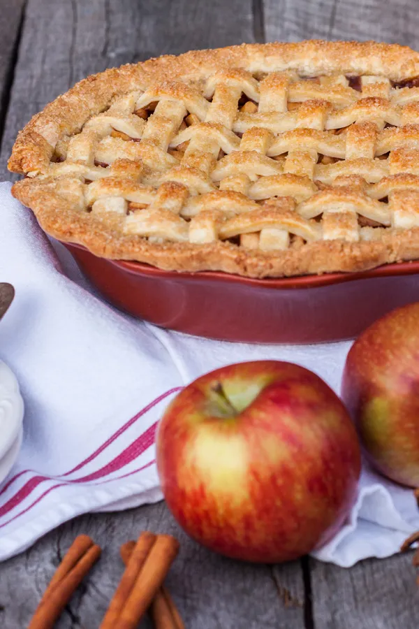
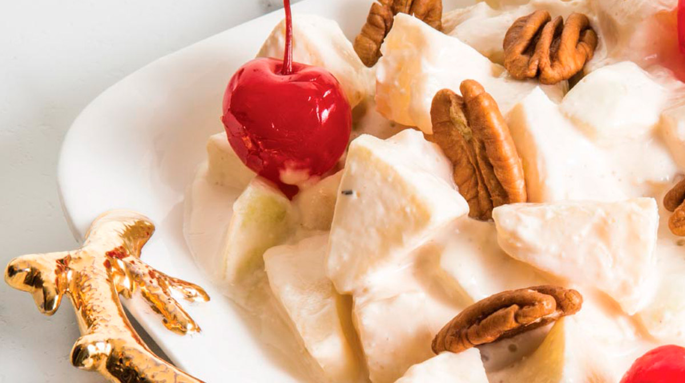

RECETAS
Pay de manzana
Ingredientes:
- 2 tazas (250 gramos) de harina de trigo
- 2 cucharaditas de sal de mesa
- 2/3 taza (140 gramos) de mantequilla
- 6 cucharadas de agua fría
- 4 - 6 manzanas, peladas, descorazonadas y rebanadas
- 3/4 taza de azúcar
- 1 cucharadita de canela
- 1 cucharadita de vainilla
Preparación:
- Precalienta el horno a 180 °C.
- Mezcla la harina con la sal y la mantequilla.
Agrega el agua a cucharadas, incorporando hasta tener una masa tersa y uniforme, pero sin trabajarla de más.Extiende la masa con un rodillo sobre una superficie enharinada y forra con esta el fondo y las paredes de un molde para pay.
- Mezcla las manzanas con el azúcar, canela y vainilla. Coloca sobre la masa del pay.
- Hornea el pay hasta que la costra se haya dorado y la manzana suavizado, entre 35 y 50 minutos.

Ensalada de manzana
Ingredientes:
- 1 taza de crema
- ½ taza de leche condensada
- ½ taza de nueces en mitades
- 1 taza de piña en almíbar, picada
- 2 manzanas amarillas
- ½ taza de cerezas en almíbar para decorar
Preparación:
- Pela y pica las manzanas finamente. Reserva.
- En un tazón mezcla la crema con la leche condensada. Bate hasta que se encuentren bien integradas.
- Añade las manzanas. Combina con la crema con cuidado. Incorpora la piña y cubre bien.
- Sirve en una charola o en porciones individuales. Agrega la nuez y las cerezas.

Panqué de manzana
Ingredientes:
Crumble
- ½ taza (125g) de azúcar moscabado
- 1/3 taza (25g) de harina
- 2 cucharaditas (10g) de canela molida
- ½ cucharadita (2.5g) de nuez moscada
- 2 cucharadas (30g) de mantequilla suave
Crumble
- Precalendar el horno a 170°C, rocía el molde para panque con spray antiadherente o similar. Para el crumble, mezcla la azúcar morena, harina, canela, nuez moscada y mantequilla.
- Combina la harina, polvo para hornear, bicarbonato y sal. Aparte, bate la mantequilla y azúcar morena hasta que la mezcla este suave y esponjosa. Agrega el huevo y vainilla y bate bien. Agrega la mezcla de harina alternando con el puré de manzana. Vierte la manzana en cuadritos y mezcla.
- Vierte la mitad de la mezcla en el molde. Espolvorea un poco de la mezcla de crumble y vuelve la otra parte de la mezcla y termina espolvoreando el resto del crumble.
- Hornea 60-65 minutos o hasta que al insertar un palillo y salga limpio. Deja enfriar por 15 minutos antes de desmoldar.